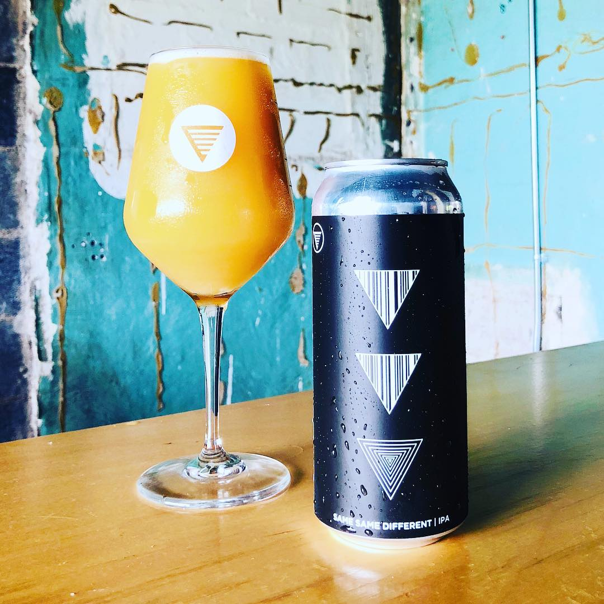

HOME
IPAs
Same Same Different IPA
HOMES Brewery
Bright, citrusy, tropical hop flavor, brewed with Mosaic, Citra and Simcoe.
Located in Ann Arbor, MI, HOMES Brewery focuses on developing hoppy and sour beers but is known for periodically stepping outside those styles. Their name comes from the great lakes acronym (Huron, Ontario, Michigan, Erie, Superior), to which you respond either: "I knew it!" or "Ohhhh... I've never heard that before"
Check out their site HERE 